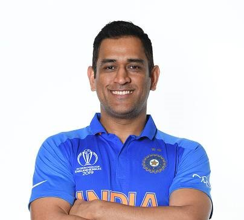

Mahendra Singh Dhoni
(Captain Cool)

Cricketer, India
10 Things You Didn't Know About M.S. Dhoni
- He's a car freak, and his favourite is a Hummer H2.
- Not just a car freak, he's a motorcycle freak as well, owning 23 bikes (as of date). His favourite, reportedly, is his Harley Davidson.
- Many of his cars have the license number '007'.
- His hair cut was modelled on the hairstyle of his 'her', John Abraham.
- Dhoni was a football goalkeeper. His football coach sent him to play cricket for a local club team, Commando Cricket Club.
- Dhoni's father and his wife Sakshi's father both worked for the same company, MECON.
- Dhoni was the most expensive signing of the first IPL auction, contracted by the Chennai Super Kings for $1.5 million.
- On his ODI debut, Dhoni scored a duck against Bangladesh, out run out.
- Dhoni received a two-match ban from playing in the ODI series against Sri Lanka for the team's slow over-rate during the second ODI in Nagpur (18 December 2009) by ICC match referee Jeff Crowe.
- Dhoni has the highest average among Indian batsmen who have played more than 50 matches.
"Leadership is the capacity to translate vision into reality."
--M.S. Dhoni
If you have time, you should read more about this incredible human being on Wikipedia.
For more information mail us
Tribute page developed by: Shivanshu Vishwakarma